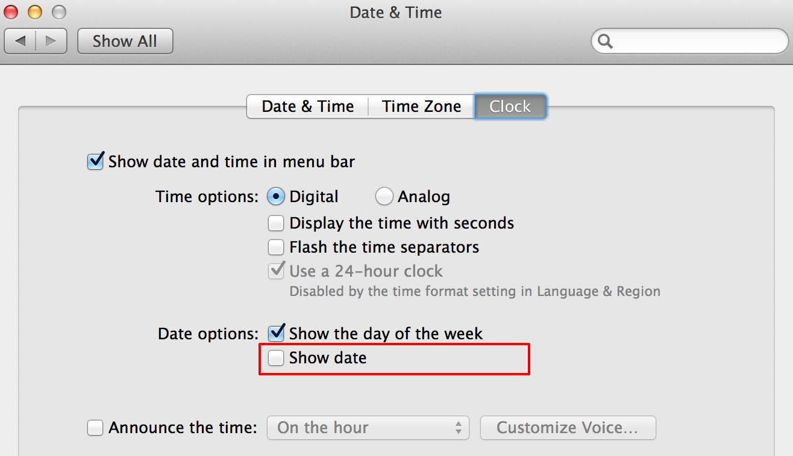

1.界面


更新历史:BUILD.md
2.功能
- 菜单栏图标显示当天日期，从状态栏快速弹出含农历、节日、节气的万年历
- 点击任意日期，下方显示公历、农历、干支、生肖、节日以及放假 / 调休信息
- 可以按(前/后)(年/月)的方式改变日期，也可以直接选择年月；支持 1901–2099 年
- 支持键盘控制日历: ←上一年, →下一年，↑上一月，↓下一月，↵回今日
- 支持国内的假期调整：周末上班或者工作日放假；假期安排每周自动检查更新，也可以在菜单中手动更新
- 自定义日期：生日、纪念日等，支持每年农历、每年公历、每年某月第几个星期几、某一天；可以导入 / 导出
- 内置节日按分类（传统节日、公历节日、西方节日、纪念日）显示或隐藏
- 外观：跟随系统 / 日间模式 / 夜间模式
- 农历使用系统自带的中国历法计算，与香港天文台公布的 1921–2099 年对照表完全一致
- 按下 COMMAND 键，同时用鼠标拖动可以改变图标位置；可设置开机自启动
- 开源

遇到“无法打开”或“无法验证开发者”的错误: 在“访达”中按住 Control 点按应用并选择“打开”；或者在终端中执行
xattr -cr /Applications/WanNianLiSwift.app。也可以参看Mac基础教程-如何打开身份不明开发者的应用程序
3.视频介绍@Youku
4.建议使用方法
- 调整Mac的时钟设置，在状态栏中隐藏日期信息，保留时间和星期
- 将本程序的图标拖至Mac时钟的左侧

5.声明
- #include <disclaimer.h>
- 如商用，须征得本人同意